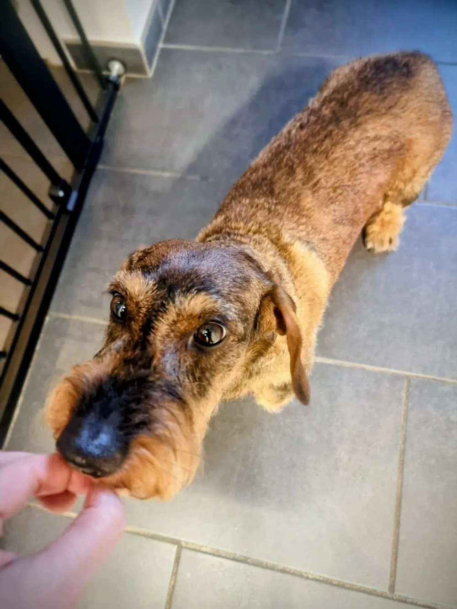
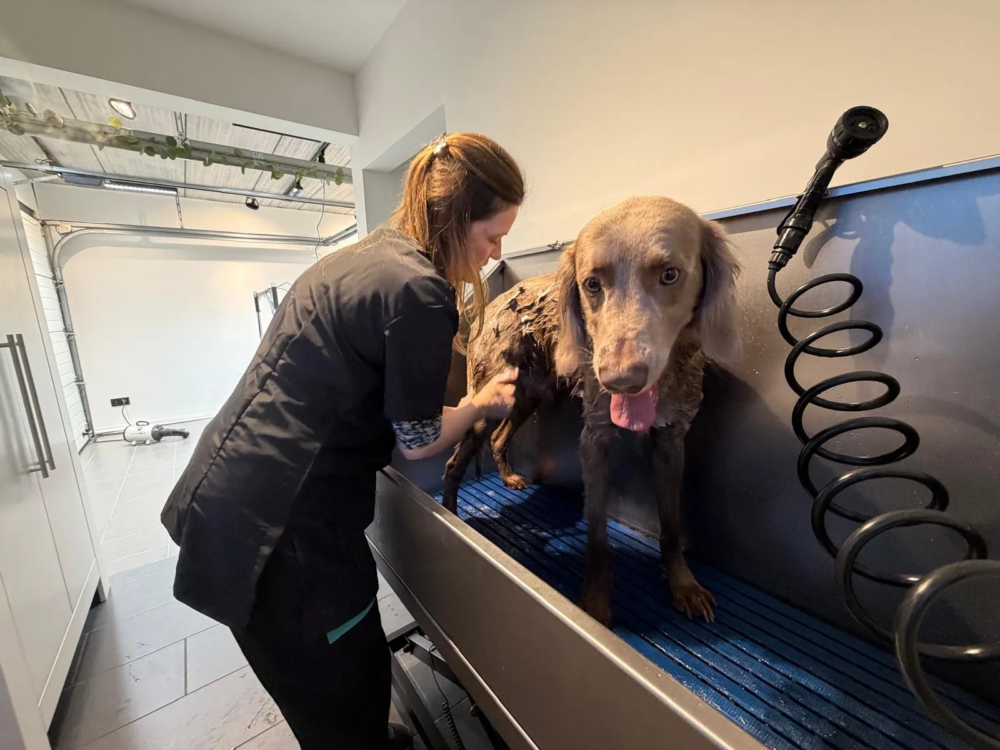
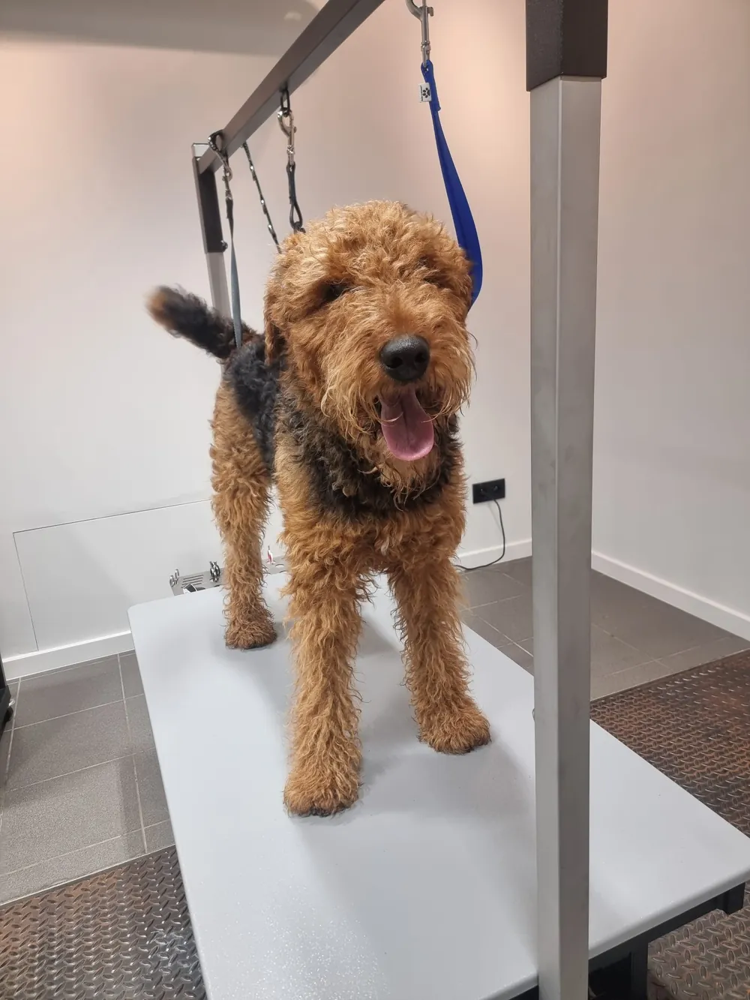

Rustig kennismaken
Een krijtbordje met de naam van je hond, vers water en snoepjes om te belonen.
Bij Dog Spirit staat er altijd maar één hond op de tafel. Sandra neemt de tijd, beloont met snoepjes en werkt rustig, ook met puppy's, senioren en angstige honden.

Honden voelen meteen of iemand gehaast is. Daarom werk ik één op één, zonder prikkels, en pas ik alles aan je hond aan. Jij mag blijven, en krijgt er een drankje bij.

Een krijtbordje met de naam van je hond, vers water en snoepjes om te belonen.

Met huidvriendelijke producten, en geurtjes die honden op hun gemak stellen.

Op maat van je hond, met een aparte droger voor angstige hondjes.

Plukken, knippen, scheren of ontwollen. Poten, nagels, oren en ogen horen erbij.
Hoe lang het duurt hangt af van het ras, de vacht en wat je wil. Bij een eerste afspraak bel ik je even terug om dat samen te bekijken.
Voor een regelmatig verzorgde hond, inclusief 21% btw.
Goed om te weten: bij veel knopen of vilt, moeilijk gedrag of vlooien kan er iets bijkomen. Een richtprijs voor jouw ras vraag je gewoon even na.
Vraag de prijs voor je ras

Na jaren in de farmaceutische sector koos ik bewust voor werk dat dichter bij mezelf ligt: werken met dieren, vanuit vertrouwen.
Ik volgde een professionele opleiding tot hondentrimmer en blijf bijleren via workshops, beurzen en seminars, met extra aandacht voor huid, vacht en welzijn.
Van teckel tot golden retriever. Alle rassen zijn welkom, ook plukhonden en de grote jongens.


"Vanaf het eerste moment voel je dat Sandra haar job met hart en ziel doet. Zowel baasje als hond krijgen een ontzettend warm welkom. Er is werkelijk aan alles gedacht: een persoonlijk krijtbordje met de naam van je hond, vers water, en onbeperkt snoepjes om onze viervoeters positief te belonen."
"Voor de 1ste keer geweest met Sky , golden retriever. Super lief ontvangen voor een totale metamorfose. Wassen , kammen , drogen , knippen ... allemaal op tempo van Sky."
"Mylo, onze 5-jarige hond, ging voor de allereerste keer naar een trimsalon. We waren eerlijk gezegd een beetje benieuwd hoe hij het zou ervaren, maar Sandra heeft dit echt geweldig aangepakt."
Ik werk enkel op afspraak. Bel of stuur een berichtje met het ras van je hond en wat je graag wil. Is het je eerste keer, dan bel ik je terug.